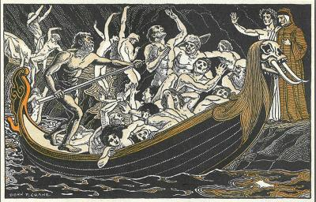
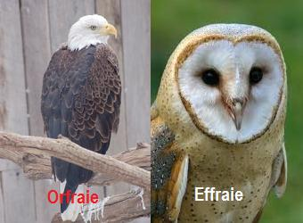

Le baron de Jauioz
Baron Jauioz
Dialecte de Cornouaille
|
1° En traduction rimée, dans la "Revue de Paris", sous le titre "Le Sire de Joioz", le 7 mai 1837. 2° Barzhaz Breizh, 1ère Edition, 1839. Selon Camille de La Villemarqué, la nièce du Barde, "on la désignait sous le nom de son mari, Penquerc'h, [mais c'était] une Droal de la famille de Mélan-Droal du village de Kergos" . Françoise Droal-Mélan, dont on a parlé à propos de Sire Nann , avait en effet une soeur cadette , Marie-Jeanne-Josèphe Droal (1806 -1892), mariée en 1828 à Jean Pennequerch. Celle-ci avait une fille, Clémence Penquerc'h, qui connaissait encore en 1907 les chansons qu'elle tenait de sa mère, dont l'énigmatique "Prédiction de Guiclan" ! Outre ce chant, on doit à Marie-Jeanne Penquerc'h un chant, "Marianne Le Manson" , non publié dans le Barzhaz, que l'on trouve pages 86 à 89 du premier carnet de Keransquer. Une version beaucoup plus complète (38 strophes) est donnée dans le 2ème carnet pp.43 à 46. - par de Penguern, t.89 :"Ar jouiss koz" (Taulé, 1850) (=Gwerin, 4); "Ar jouiss koz (Henvic, 1851) (=Gwerin 5). _ par Luzel, "Gwerzioù",T.2, p.31: "Isabell Ar Iann", (PLuzunet, 1868). - par J.M. Le Jean, dans la "Revue de Bretagne et Vendée" 1873,2: "Ar Jouis Bras (Guingamp) (=Al liamm, 159, 173). - par F. Cadic, dans la "Paroisse bretonne de Paris", avr. 1914: "Ni oe teir c'hoar propis ha gwenn" (Melrand). - par Belz dans "Al liamm" 161, 1973: "Sonenn ar Jowised" (Ploermel, 1973) |
 |
1° As a rhymed French translation, in "Revue de Paris", under the title "Le Sire de Joioz", on 7 May 1837. 2° Barzhaz Breizh, 1st Edition, 1839. According to Camille de La Villemarqué, the niece of the Bard, "she was known by the name of her husband, Penquerc'h, [but she was a] Droal of the Mélan-Droal family from the village Kergos" . Françoise Droal-Mélan, already addressed in connection with Sir Nann , had, in fact, a younger sister , Marie-Jeanne-Josèphe Droal (1806 -1892), who married in 1828 Jean Pennequerch. Marie-Jeanne had a daughter, Clémence Penquerc'h, who still knew in 1907 the ballads she had learnt from her mother, among them the puzzling "Guiclan's prediction" ! Beside this song we are indebted to Marie-Jeanne Penquerc'h for a song, "Marianne Le Manson" , not published in the Barzhaz, which is recorded on pages 86 to 89 in the first Keransquer copybook. A far more complete version (38 stanzas) is recorded in the 2nd collecting book on pp.43 to 46. - by de Penguern, t.89 :"Ar jouiss koz" (Taulé, 1850) (=Gwerin, 4); "Ar jouiss koz (Henvic, 1851) (=Gwerin 5). _ by Luzel, "Gwerzioù", 2: "Isabell Ar Iann", (PLuzunet, 1868). - by J.M. Le Jean, in "Revue de Bretagne et Vendée" 1873,2: "Ar Jouis Bras (Guingamp) (=Al liamm, 159, 173). - by F. Cadic, in "Paroisse bretonne de Paris", avr. 1914: "Ni oe teir c'hoar propis ha gwenn" (Melrand). - by Belz in "Al liamm" 161, 1973: "Sonenn ar Jowised" (Ploermel, 1973) |
Ton
(Fa majeur, Arrangt MIDI d'après Friedrich Silcher, 1841)
| Français | Français | English |
|---|---|---|
|
1. Quand je lavais au bord de l'eau, J'entendis un funeste oiseau. 2. - Tina! C'est affaire conclue. Au vieux Jauioz on t'a vendue.- 3. - Ma mère, est-il vrai qu'au Baron On m'ait vendue, à ce barbon?. 4.- Mon enfant, moi je n'en sais rien. Votre père, peut-être bien. 5. - Dites-moi, mon père, une chose M'aurait-on vendue à Joyeuse? 6. - Je n'en sais rien, ma chère enfant, Mais votre frère est au courant. 7. - Lannik, mon frère, dites-moi, Appartiens-je à qui que ce soit? 8. - Mais oui, ma sœur, au vieux baron. Vous devez quitter la maison. 9. Vous allez partir sans tarder: Le prix de la vente est payé: 10. Cinquante écus en argent blanc, Et autant en bel or brillant. 11. - Ma bonne mère, dites-moi, Quels habits mettrai-je en ce cas? 12. Robe rouge ou blanche de laine, Que m'a faite ma sœur Hélène? 13. La robe rouge ou bien la blanche, Et le corselet noir sans manches? 14. - Tous vos habits feront l'affaire, Fille, cela n'importe guère. 15 Un cheval noir est à l'entrée, Il partira la nuit tombée. 16. Il partira le soir tombé. Il vous attend tout harnaché.- 17 N'était encore allée bien loin, Que retentissait le tocsin. 18. Ce son bouleversa son âme: - Adieu, l'église de Sainte Anne; 19. Adieu, cloches de ma patrie, Cloches qui fûtes mes amies! 20. En passant le Lac de l'Effroi, Ce sont des morts qu'elle aperçoit! 21. Une bande de revenants, Dans des barques, vêtus de blanc. 22. Elle voit des morts, tant et tant; La peur lui fait claquer les dents. 23. Passant par les vallées du Sang, Elle les voit la poursuivant 24. Son cœur est si plein de souffrance, Qu'enfin elle perd connaissance. 25. -Nous dinerons dans un moment, Prends donc un siège en attendant.- 26. Le seigneur siégeait près du feu Tout de noir vêtu, tel un freux. 27. La barbe et les cheveux tout blancs Mais les yeux comme un feu brûlants. 28. -Voilà, dit-il, voilà la femme Que depuis longtemps je réclame. 29. Allons de pièce en pièce, enfant, Compter mon or et mon argent. 30. De chambre en chambre, belle enfant, Comptons mon or et mon argent! 31. - J'aimerais mieux être chez moi A trier les copeaux de bois! 32. - Allons au cellier! Rien de tel, Que mon bon vin, doux comme miel! 33. - C'est l'eau des prés que je préfère, Que boit le cheval de mon père. 34. - Avec moi, d'échoppe en échoppe, Viens donc choisir de belles robes! 35. - Je préfère un sarrau de lin Que ma mère eût fait de sa main. 36. - Viens jusqu'à l'armoire chercher Des festons, au moins, pour l'orner! 37. - J'aime mieux la tresse de laine Comme en ourle ma sœur Hélène. 38. - Si j'en juge par ces répons, Tu ne m'aimes pas, dirait-on. 39. Que n'eus_je la langue empâtée Le jour où j'eus la folle idée, 40. A prix d'or de vous acheter Vous que l'on ne peut consoler! - 41. - Oiseaux du ciel, écoutez-moi, Doux oiseaux, écoutez ma voix! 42. Vous qui volez vers mon village, Tandis que moi, je reste en cage, 43. Portez aux gens de mon pays Mon salut, aux grands, aux petits, 44. A la mère qui m'enfanta, Au père aussi qui m'éleva. 45. A la mère qui m'enfanta, Au prêtre qui me baptisa. 46. Faites mes adieux à chacun. Et que Lannik ne craigne rien. 47. Deux ou trois mois étaient passés Quand, tous les siens étant couchés, 48. Que tous reposaient dans leur lit, - Et il pouvait être minuit, 49. Dehors ni dedans aucun bruit-, A la porte une voix a dit: 50. - Père et mère, si vous m'aimez, Pour moi qui meurs, faites prier! 51. Priez aussi, prenez le deuil: Votre fille est dans son cercueil!- Trad. Ch. Souchon (c) 2003 |
1. Lavant un jour à la rivière, J'entendis l'oiseau noir chanter. 2. - Tina, tu ne t'en doutes guère Le baron vient de t'acheter.- 3. - Ma mère, est-ce vrai, je vous prie Ce qu'il a dit en son latin 3 bis. L'oiseau de mort dans la prairie, Le vilain oiseau, ce matin? 4.- Tina, je ne saurais vous dire, Votre père vous le dira. 5. - Mon père, est-il vrai que le sire Loin du pays m'emmènera? 6. - Je n'en sais rien, mais votre frère Sans doute le saura bien, lui! 7. - Lann, est-il vrai que pour sa terre Je dois partir? - Dès aujourd'hui! 8. Dès ce soir, à la nuit tombante, Vous le suivrez dans son pays; 9. C'est chose conclue, et la vente, Et votre départ et le prix! 10. 11. - Mettrai-je ma robe de laine, Dites-moi, ma mère en partant, 12. Ou le corset rouge qu'Hélène, M'essayait hier, en chantant? 13. 14. - Votre robe neuve? Qu'importe! Ah! Qu'importe, ma pauvre enfant! 15 16. Voyez-vous au seuil de la porte Ce cheval noir?... Il vous attend.- 17 Comme elle quittait la chaumière, Elle ouït les cloches sonner. 18. Sonner l'heure de la prière Et se mit alors à pleurer. 18 bis - Adieu, Bonne Vierge Marie Et vous aussi, Jésus mon Dieu, 19. Adieu, cloches de ma patrie, Cloches de ma paroisse, adieu! 20. En passant près du Lac des Peines, Elle vit sur l'onde cinglant 21. Des petites nacelles pleines De trépassés, vêtus de blanc. 22. Et comme elle pressait sa fuite A travers le Vallon du Sang 23. Elle les vit tous à sa suite, Tous à sa suite s'élançant. 23 bis. Sur sa poitrine haletante Sa tête tombait de douleur, 24. Et ses dents claquaient d'épouvante, Et son sang se glaçait au cœur. 25. - Asseyez-vous un peu, Madame, On va préparer le repas. 25 bis. Remettez vos sens et votre âme, Le souper ne tardera pas. - 26. Près du foyer, courbé par l'âge, Les cheveux blancs. La barbe aussi, 27. Plus noir qu'un corbeau de la plage L'oeil en feu, Jauioz est assis. 28. - La voici donc, la jeune fille Que je demandais si souvent! 28 bis. Elle est, par ma foi, bien gentille! M'aimerez-vous, ma belle enfant! 29. Venez avec moi, ma mignonne; Venez, que je vous fasse voir 30. Tous les trésors que je vous donne, Tous mes trésors, tout mon avoir. 30 bis. Comptez-les! en voilà, j'espère! Comptez ces écus par monceaux. 31. - J'aimerais bien mieux chez mon père Près du feu compter les copeaux. 32. - Descendons au cellier, ma mie, Goûter de mon vin le plus doux. 33. - J'aime mieux l'eau de la prairie Dont les chevaux boivent chez nous. 34. - Venez choisir manteau de fête, Doublé de plume et de satin. 35. - Si ma mère me l'avait faite J'aimerais mieux jupe de lin. 36. - Et maintenant au vestiaire, Voyons quelque riche feston! 37. - J'aime mieux la tresse grossière Que m'ourlait ma sœur au canton. 38. - A juger par ce que vous dites, J'ai peur que vous ne m'aimiez pas, 38 bis. Que cent fois et cent fois maudite, Soit l'heure où je vous vis, là-bas! 39. Que n'ai-je eu la langue moins folle! Au moment de vous marchander, 40. Que n'ai-je perdu la parole! Quand rien ne peut vous dérider! - 41. - Petits oiseaux, je vous en prie, Ecoutez, écoutez ma voix! 42. Je reste, et vous, vers la patrie Vous revolez tous à la fois! 42 bis. Vous revolez vers la prairie Où je folâtrais au printemps! 42 ter. Comme vous joyeuse; - la vie M'était bien douce dans ce temps. 42 quater. En gagnat vos vieilles tourelles, Vos clochers, vos nids sous les toits, 43. Portez, oiseaux, de mes nouvelles, A ceux que je laisse en nos bois; 44. A ma pauvre petite mère, A ma mère que j'aime tant; 44 bis. A ma sœur Hélène, à mon père Que je vis pleurer en partant; 44 ter. Au bon père qui m'a bercée Tout enfant sur ses deux genoux; 45. Au prêtre qui m'a baptisée A monsieur le recteur, à tous; 46. Allez et n'oubliez personne, A tous pour moi dites adieu, 46 bis. A mon frère... qu'on lui pardonne! Allez, chers oiseaux du bon Dieu. 47. Trois mois après dans la chaumière Chacun reposait; - aucun bruit 48. Au dedans, ni sur la bruyère: Il était bien près de minuit, 49. Or, on entendit, à la porte, Murmurer une douce voix, 49 bis. Pareille à la plainte qu'apporte La brise des mers ou des bois: 50. - Faites prier pour moi, ma mère, Priez aussi, prenez le deuil; 51. Car on me porte au cimetière, Votre fille est dans le cercueil!- Trad. La Villemarqué 1837 - 1839 |
1. When I was by the brook and washed, The bird-of-death sighed and it quoth: 2. - O good Tinaik, have you known? You're sold to Jauioz, the baron.- 3. -Is it true, Mother, what I'm told, That to old Jauioz I've been sold?. 4. - I do not know, my dear daughter, You should go and ask your father. 5. - My dear father, now tell me please, Am I sold to old Baron Louis? 6. - I do not know, my dear daughter, You'd rather go ask your brother. 7. - Lannik, my brother, tell me now, Am I sold to the Lord Jauioz? 8. - Yes, you are sold to the baron, And you must at once leave our home. 9. You must leave without delay, The price he did readily pay: 10. Fifty crowns paid in white silver, In yellow gold fifty others. 11. - Dear mother, on that occasion, What kind of dress shall I put on? 12. The white, woollen dress or the red One that sister Helen has made? 13. The red dress or the new white dress With the black velvet corselet? 14. Oh, what you like, whatsoever, My daughter, it does not matter. 15 There is a black horse at the gate, Waiting for the night to open 16. There is a black horse at the gate, All harnessed for you it does wait. 17. She was not far from the small town, When she heard all the bells that rang. 18. And that sound brought tears to her eyes: - Farewell to you, church of Saint Anne; 19. Farewell to you bells of my town, I'll never hear again your sound! 20. She came to the Lake of Anguish, And saw dead people in masses; 21. And she saw dead people in crowds, White clad, sitting in little boats. 22. She saw of dead people hundreds; Against her breast her teeth chattered. 23. When she reached the Valleys of Blood, She saw them all catching her up; 24. Her heart was so full of distress, That she lost at last consciousness. 25. - Take a seat, my girl, and sit down To wait until dinner is done.- 26. Said the lord who sat by the fire, Like a raven, in black attire. 27. His beard and his hair they were white, But his eyes with fever alight. 28. - Here is, so said he, the woman That I have wooed for so long. 29. Come on, my child, with me, come on, You shall help me count my fortune. 30. From room ro room, dear, as I told, We'll count my silver and my gold. 31. - I'd rather be with my mother Sorting wood shavings to be burnt! 32. - Let's go to the cellar below, And taste my wine which is mellow! 33. - I prefer to share rain water, With the horses of my father. 34. - Then let us go from shop to shop, And choose for you a gorgeous robe! 35. - I'd prefer a skirt of linen That my mother would have woven. 36. - Let's choose at least in the wardrobe Scallops that would that skirt adorn! 37. - I'd prefer the white braid to hem That would make my sister Helen. 38. - Judging from the answers you made, You don't like me, I am afraid. 39. Why was not my voice lost with cough The day I was foolish enough, 40. Foolish enough as to buy you Whom nothing might soothe that I knew!- 41. - On your flight, you dear little birds, I beg you who my voice have heard! 42. Fly to my town, I can't follow, You are in joy, I'm in sorrow! 43. O, carry my blessing and greet All my dear friends that you will meet. 44. Greet the mother who did me bear! Great the father who did me rear. 45. Greet the mother who had borne me, And the priest who has christened me. 46. Bring my greetings to anyone; And to my brother, my pardon. 47. After two or three months were gone Her parents were in bed at home. 48. In bed they were all, sleeping fast, And it could be about midnight. 49. - No noise without, no noise within- At the door a voice was saying: 50. - In God's name, father and mother, Let a priest for me say a prayer! 51. Pray for me, too, and for me mourn: Into my coffin I've been borne!- Translated by Ch. Souchon (c) 2003 |
Cliquer ici pour lire les textes bretons.
For Breton texts, click here.

|
Résumé
Louis de Jauioz (ou de Joyeuse), gentilhomme languedocien, qui s'est illustré en combattant les Anglais à Ypres, Cassel, Gravelines, Bourbourg, à la fin du XIVème siècle, aurait, selon cette ballade, acheté à prix d'or, dans sa vieillesse, une jeune fille de Bretagne qui serait morte de chagrin en France. Comme la "Fiancée de Satan" , cette complainte décrit les contrées que l'on traverse avant d'atteindre l'enfer celtique, voulant exprimer par là que la terre étrangère où est entraînée la jeune fille est pour elle comme un enfer. L'attachement des paysans bretons pour les cloches de leur paroisse était immense et, lorsque pendant la révolution elles furent enlevées pour être fondues, la consternation fut générale. Un examen attentif du manuscrit de Keransker et des versions recueillies par d'autres collecteurs conduit à rejeter cet arrière-plan historique et ces évocations mythologiques, mais non l'angoissant phénomène social dont témoigne ce chant. Le Gonidec: Une référence discutable L'édition de 1845 du Barzhaz nous apprend que c'est le linguiste Jean-François-Marie Le Gonidec (1775 - 1838), qui a procuré à l'auteur cette version de la ballade narrant les déboires conjugaux du Baron de Jauioz. Le Gonidec était venu s'établir à Paris fin 1834, muni d'une modeste retraite de fonctionnaire des Eaux et Forêts d'Angoulême. A partir de 1837, il fut reçu, tout comme l'était le jeune La Villemarqué, chez Auguste de Gourcuff, le directeur d'une compagnie d'assurances florissante, dont le salon était le rendez-vous de l'élite intellectuelle de la colonie bretonne à Paris. On y rencontrait le poète Auguste Brizeux, le romancier Emile Souvestre, les historiens Aurélien de Courson, Audren de Kerdrel, de Blois et bien d'autres dont les noms sont évoqués à propos de tel ou tel chant. L'auteur d'une grammaire et d'un dictionnaire bretons faisant autorité, ne pouvait que devenir le chef spirituel de ces "exilés". La Villemarqué reconnaît volontiers sa dette envers son aîné qui lui donnait, écrit-il en 1869 dans la Revue de Bretagne et de Vendée, "des leçons d'une langue que je parlais alors sans règles et s'intéressait vivement aux textes populaires dont j'allais commencer l'impression: ce qu'il y avait d'incorrect ... il le redressait et expliquait les expressions et m'aida plus d'une fois à retrouver le fil à travers le dédale des versions souvent embrouillées" . En se reportant aux chants notés par de Penguern, ou même Luzel, qui, volontairement, choisirent de ne pas s'astreindre à ce travail, on comprend immédiatement ce que La Villemarqué veut dire. En dépit de cette référence prestigieuse à Le Gonidec, rien dans leur biographie, n'autorise l'identification du Jauioz de la ballade bretonne à l'un quelconque des barons de Joyeuse (en Ardèche). Il est vrai que, dans l'argument, La Villemarqué précise: "S'il faut en croire les poètes populaires bretons et si la tradition n'a point substitué un nom à un autre, (le baron de Jauioz) aurait pendant son séjour en Bretagne acheté à prix d'or et emmené en France une jeune fille, etc." . Le thème de la jeune fille mariée de force est une sorte de lieu commun dans les ballades bretonnes. Dans le Barzhaz, on trouve par exemple dans le "Frère de Lait" une histoire similaire pour laquelle aucune référence historique fantaisiste n'a été recherchée. Il appartient, de façon plus générale, à la grande famille des "chants de mau-mariées" (mal-mariées) dont le répertoire traditionnel de langue française, à partir du 13ème siècle, offre de nombreux exemples, souvent imités par les bardes de Basse-Bretagne: Ar boulom kozh (le vieux bonhomme) en est un bon exemple. Critiques de Vallet de Viriville et de Jubainville Ce chant est le premier à propos duquel une observation logiquement fondée par un spécialiste des textes anciens se fit entendre dans le concert unanime de louanges qui saluèrent les deux premières éditions principales du Barzhaz. En 1847, l'ancien condisciple de l'auteur à l'école des Chartres, Vallet de Viriville (1815-1868), faisait remarquer, dans le Bulletin de l'Ecole (t.II, pp. 280-283), que la notice historique citée par La Villemarqué dans son "Argument" précédant le Baron de Jauioz, (la "Chartes des Ordres", V, XV, f.6933), ne contenait aucune allusion à une jeune fille vendue, ni à aucun des éléments de la ballade. Il ajoutait: "Nous ne saurions, en vérité, donner notre assentiment à une méthode d'induction et de critique qui consiste purement et simplement à supposer prouvé ce qu'il faudrait prouver. Comment M. de la Villemarqué, qui est un homme de goût et d'esprit, n'a-t-il pas songé que [...] le nom du baron de Jauioz lui-même, ce seul nom sur lequel repose tout l'édifice du poème, peut fort bien n'être qu'une assonance fortuite, ou mal saisie par son oreille, et qu'enfin, au lieu de marcher sur le terrain positif de l'érudition, il vogue en plein océan d'utopie". La Villemarqué laissa ces objections sans réponse. Vingt-deux ans plus tard, dans la "Bibliothèque de l'école des chartes" (1869, tome 30. pp. 621-632), Henri d'Arbois de Jubainville faisait à La Villemarqué le même grief, en s'appuyant sur la version du même chant que F-M. Luzel venait de recueillir, en octobre 1868, en vue de sa publication dans le 2ème tome de ses "Gwerzioù Breiz Izel" (1874) sous le titre de "Izabell ar Iann - Isabelle Le Jean" . Il soulignait que le premier tome ne s'était guère vendu, parce que les chansons populaires y étaient reproduites "telles qu'elles avaient été entendues... sans essayer de polir les formes un peu barbares de cette poésie de paysan" , mais que l'Académie des Inscriptions venait de reconnaître la valeur scientifique de l'ouvrage en décernant une médaille à son auteur. Il s'attachait à montrer en rapprochant certains vers, pris tout au long des deux poèmes, qu'il s'agissait bien de la même pièce et que les différences qu'on observait étaient dûes à la conception qu'avait La Villemarqué de la poésie paysanne: elle offrait, pensait-il, les restes déformés de pièces pleines d'élégance composées par les anciens bardes et qu'il se donnait pour mission de restituer (en expurgeant les mots français trop voyants, etc.) Or, le temps était venu, où le poète devait faire place à l'érudit et où ce grand collecteur qu'était La Villemarqué devait substituer aux pastiches des textes scientifiquement établis, avant que d'autres ne le fassent à sa place. En l'occurrence, la modification la plus discutable concernait le titre lui-même. Jauioz et Jouis Si Jauioz n'est pas Louis de Joyeuse, qui est-ce donc? Il semble que la clé de l'énigme se trouve dans les carnets de collecte de La Villemarqué, transcrits par Donatien Laurent . Sur les pages 63 à 65, figure un chant N° XXXIII composé d'un premier texte et de variantes qui, au total, contiennent tous les éléments de la ballade: Dans le premier texte (intitulé "zonn", chant): - l'annonce par les parents de la vente et du paiement du prix au frère, - le choix de l'habit, - le départ sur le cheval, - le passage par "stank an anken" (traduit dans un renvoi par "l'étang de l'angoisse"), - l'adieu au village, - le refus d'inspecter et d'accepter les richesses de l'époux, - l'invocation des oiseaux messagers, - le portrait de l'époux. Dans les variantes (outre certains des éléments précédents): - le prologue à la rivière et le présage de l'oiseau, - le salut aux cloches du village, - la poursuite des morts (dans une variante notée en marge longitudinalement et au crayon) - la déconvenue du mari, - la visite de la défunte chez ses parents (au crayon repassé à l'encre). Le mot "JOUIS", devenu "Jauioz" dans la ballade, revient sept fois, dont une seule fois précédé de l'article indéfini. D. Laurent le traite une fois comme un nom propre et le traduit sinon par "le Juif" . C'est l'interprétation la plus probable, même si le mot breton usuel est "juzev" - et "uzev" dans le domaine vannetais. Le mot usuel que connaît Luzel est, nous dit-il, "indev", pluriel: "indevien", mais il semble bien qu'il s'agisse d'une erreur de lecture de l'imprimeur et qu'il faut lire, ici aussi, "iudev, iudevien", le seul mot connu des dictionnaires. En outre Luzel note dans ses "Gwerzioù", II, p.38 que son informatrice, Marguerite Philippe lui assura qu'elle avait toujours entendu dire que le JOUIS de cette gwerz signifiait "Juif". Il reproduit fidèlement son opinion, laissant à la critique le soin de juger si elle est fondée. Cette hypothèse est confirmée par les descriptions où apparaissent des préjugés dont on connaît les désastreuses conséquences. La Villemarqué, qui, à l'évidence, considère "Jouis" comme un nom propre , les reprend sous une forme édulcorée dans les strophes 26 et 27 de sa ballade, où est décrit l'enfant que la pauvre jeune femme a mis au monde: Mont a raon broman etal en tan---(Je vais maintenant près du feu) e condu eur jouis bihan--------------(M'occuper d'un petit Juif) à ihon ken du vel de morvran----------(Qui est aussi noir qu'un cormoran) i zaoulagat ghis daou scotan---------(Les yeux comme deux tisons) i hien duton leis a louan------------(La peau pleine de moisissure). Un aimable correspondant italien me signale que les folkloristes contemporains, tels que Yann-Fañch Kemener ou le groupe Gwerz, n'ont aucun doute à ce sujet: ils intitulent les chants apparentés par le texte ou la mélodie à la ballade de La Villemarqué, "Ar Jouis", le Juif . Et l'on y voit le mot "Jouis" rimer avec "Paris"! Jouiz et Suisse Si le chant apparaît sous des titres équivalents dans les manuscrits de Penguern " Ar Jouiss koz" (Taulé, 1850 et Henvic, 1851) et dans diverses publications périodiques: "Ar Jouis Bras" (Revue de Bretagne et Vendée, 1873.2) collecté Par J.M. Le Jean à Guingamp ou "Sonenn ar Jowissed" publié dans "Al Liamm" N°161 en 1973 (collecté la même année à Ploërmel, par Belz, on est intrigué de retrouver ce mot métamorphosé chez Luzel. Sa version, "Isabell Ar Yann", est assortie d'une note dans laquelle on apprend que "dans une leçon recueillie à Ploëgat-Guerrand par G. Le Jean, le voyageur géographe, on trouve SOUIZ au lieu de JOUIZ, et [il] pense qu'il faut alors traduire par "le Suisse" ! Dans un article de la "Revue Celtique" (1873), Guillaume le Jean suppose que ce "Jouiz" de toutes les versions populaires fait allusion aux Suisses, chefs de lansquenets dans les armées royales du temps de la Ligue. Cette interprétation évite le grand écart phonétique entre "Yuzev" et "Jouiz". Dans une version vannetaise, L'exilée de Ti-Réden collectée par l'Abbé François Cadic (Paroisse Bretonne de Paris, avril 1914), l'"épouseur" peu scrupuleux est un "bohémien" du nom de Servais. Haquenée et angoisse Le premier texte utilise à quelques vers d'intervalle deux mots phonétiquement assez proches: Ouar lost ma inkane iefet (vous irez sur la croupe - queue - de ma haquenée)... Pa dremenas stank an anken (quand elle passa l'étang de l'angoisse) On peut se demander si cet "anken" (angoisse) ne désigne pas à nouveau le cheval (inkane) de l'époux qui passe près d'un étang, et si, brodant sur un contre-sens, les neuf vers décrivant la poursuite des morts (dans des barques et vêtus de linceuls) notés en marge, ne sont pas un ajout d'un collaborateur bretonnant ou du barde lui-même, lequel en doublera le nombre dans sa ballade en répétant systématiquement chaque ligne de ce récit fantasmagorique (strophes 17 à 24). De même, les champs du père de la jeune fille évoqués dans le premier texte: Pa dremenas parcou i sat (quand elle passa les champs de son père) Scoées hi farc ni zaolagat (son champ lui frappa les yeux [?]) sont peut-être "recyclés" en "parcou an goat" (champs du sang) pour fournir une autre vision hallucinante: les morts poursuivent la malheureuse sur l'eau et sur terre. Effraie et orfraie. L'oiseau funeste appelé "evn glot" dans la ballade (str. 1, un composé absent des dictionnaires), apparaît dans le carnet sous plusieurs formes: "nin glot", mais aussi "pic" (pie), "lapousig ar maro" (oiselet de la mort) traduit dans son carnet par La Villemarqué par "fresaie". Il s'agit un autre nom de l' effraie (peut-être du latin "praesaga", présage), une chouette du groupe strix. Cependant, dans le Barzhaz, la Villemarqué, trompé par la quasi-homonymie, parle d' "un oiseau gris qui chante l'hiver dans les landes, d'une voix douce et triste et que je crois être l' orfraie " . Or l'orfraie n'a rien d'une chouette et ne pousse pas de cris prémonitoires, n'en déplaise à la sagesse populaire égarée, elle aussi, par l'homonymie. C'est un rapace diurne de la famille des faucons, dont le nom breton est "erer mor", aigle de mer. La malheureuse chouette subit, m'a-t-on dit, un dernier avatar dans la version anglaise du Barzhaz par Tom Taylor (1865) qui traduit ainsi la note de La Villemarqué: "A little grey finch, with a plaintive note, common in the winter on the heaths of Brittany, so called by the peasants." Elle est devenue un bouvreuil ou un pinson! La version du carnet N°2 On la trouvera, avec une traduction, sur la Page bretonne consacrée au présent chant. Si elle n'a pas conduit à modifier significativement ni le texte du chant ni sa traduction publiés en 1839, elle a sans doute influencé la rédaction de l"'argument" et des "notes" qui les accompagnent. L'argument de 1845 (ainsi que de l'édition 1867, presque identique) est en particulier prolongé par l'hommage à Le Gonidec évoqué ci-dessus, sans qu'on puisse en déduire si le collecteur lui doit la version publiée dans le Barzhaz, celle du carnet N°2, ou l'une des 3 variantes lacunaires du carnet n°1. Dans l'édition de 184,5 cette philippique est reprise sous une forme moins agressive: "N'est-elle donc pas un enfer, la terre étrangère, ce tombeau du coeur, etc.?" Cette tirade ne repose que sur une strophe manuscrite de la 3ème variante, p.68 du carnet 1. Cet adieu aux cloches n'apparaît ni dans le carnet N°2, ni dans la version "Isabelle Le Jean" notée par Luzel. L'importance que La Villemarqué lui donne est le reflet de ses préoccupations personnelles en 1839, plus qu'un thème majeur qu'affectionnerait la muse bretonne (en opposition totale avec l'indifférence affichée en 1790 par le chansonnier républicain Piis dans son Couplet sur les cloches ). Puis en 1867 c'est au tour de l'argument d'inclure cette concession: " S'il faut en croire les poètes populaires bretons, et si la tradition n'a point substitué un nom à un autre dans leur chanson... Ce n'est en réalité qu'une demi-concession, car, comme on l'a dit, aucun "poète populaire breton", si ce n'est La Villemarqué lui-même, n'a jamais évoqué le baron de Joyeuse. Les textes authentiques parlent systématiquement d'un personnage appelé le "Jouiz". Le "Jouiz" à l'église La version du carnet N°2, que La Villemarqué semble mettre un point d'honneur à intituler, p. 43, "Joioz - Variante" ne fait pas exception. Si elle nous transporte en Pays Bigouden (Pont l'Abbé), tout en faisant de l'héroïne anonyme une "Léonarde", vers la fin d'un récit qui mentionne d'autres lieux, Carhaix en Poher et Pontorson en Normandie, le richard peu scrupuleux s'appelle, ici aussi le "Jouiz"et le pays où il conduit sa victime est le "Bro 'r Jouisted". Ces mots apparaissent dans "Isabelle Le Jean" de Luzel qui les traduit, suivant l'indication de la chanteuse Marguerite Philippe, par "Juif " et "Juiverie", tout en admettant dans une note qu'il pourrait s'agir d'un "Suisse". C'est ce dernier sens, et le seul, que le dictionnaire de Francis Favereau, peut-être par référence à Luzel, donne à « Jouis ». Les passages inédits introduits par la gwerz du carnet N°2 ne permettent guère de trancher dans un sens où dans l'autre: Une fois mariée à un "Jouiz", la jeune femme pouvait-t-elle assister tête baissée ("en ur stouiñ") aux offices catholiques?. La doctrine hébraïque a sur le sujet des avis divergents: Maïmonide considère le christianisme comme une idolatrie, ce que nient le rabbin Meïri et d'autres décisionnaires, qui autorisent donc l'entrée des fidèles dans les églises et les mosquées, y compris pendant les prières à condition de ne pas s'y associer activement, même s'il convient de s'astreindre aux gestes de déférence prescrits par ces autres religions. Les orthodoxes ne font pas montre d'une telle largeur d'esprit. Si le mot "Jouiz" désigne un Suisse, il doit s'agir d'un Protestant pour lequel la question se pose dans des termes similaires. Dans l'autre sens, le journal "La Croix" du 2.5.2010, se contente d'indiquer, sans stipuler à qui cela s'applique, que l'accès au choeur des églises est réservé aux seuls clercs, tout comme l'espace sacré délimité par l'iconostatse dans les églises orthodoxes. La gwerz bretonne nous dit donc ce qu'il en était autrefois (quand précisément?) dans notre pays, des Juifs ou des Protestants: ils avaient permission de pénétrer sous le porche des églises catholiques, comme les "cacous" (lèpreux) mentionnés en surcharge sur le manuscrit, mais pas dans la nef... Juiverie ou "Suisserie"? Cela excuserait en outre la solution expéditive proposée par la mère du "jeune marié" pour régler ses problèmes de couple: trucider son épouse (p.46). Il semble que dans sa réponse le "Jouis" - qui a des lettres - fasse allusion au "Lai du Frêne" de Marie de France, où l'anneau (Gwalenn d'Onn) de la jeune fille appelée ainsi parce qu'elle fut abandonnée enfant entre les branches d'un frêne, lui permet de retrouver sa génitrice. Ceci dit, cette démarche philologique n'est pas dénuée d'intérêt. Le fait que le mot principal, "Jouiz", ne soit plus compris avec certitude de bretonnants exercés tels que Luzel et Marguerite Philippe atteste effectivement de l'ancienneté de cette ballade. |
Résumé
Louis de Jauioz, a gentleman from Languedoc (Southern France), who had made himself famous when fighting against the English at Yeper, Cassel, Gravelines, Bourbourg, at he end of the 14th century, is said to have, in his old age, bought and paid in coin of the realm, a girl from Lower Brittany who died of grief in France. Like the song 'Satan's Bride' , this ballad contains a description of the land one has to go through before reaching hell, according to an old belief, for the far country to which the girl is taken off is to her as insufferable as hell itself. The Breton country folk's attachment to their clocks was immense. When they were taken down to be melted into guns, during the Revolution, it was to the indignation of most people. A close examination of the Keransquer MS and the related versions gathered by other collectors causes to discard this historical scenery and to reject these mythological associations, but not to deny the dreadful social phenomenon evoked by this ballad. Le Gonidec: A questionable reference The 1845 edition of the Barzhaz Breizh informs us that it was the linguist Jean-François-Marie Le Gonidec (1775 - 1838) who provided the author with this ballad about Baron de Jauioz' matrimonial misfortune. Le Gonidec had moved from Angoulème to Paris by the end of 1834 as a modest retiree of the National Forestry Commission. As from 1837, he was a regular visitor, like La Villemarqué, to the insurance tycoon Auguste de Gourcuff's salon, a meeting point for the Breton intellectuals who had settled in Paris. The place was frequented by the poet Auguste Brizeux, the novelist Emile Souvestre, the historians Aurélien de Courson, Audren de Kerdrel, de Blois and many others whose names are quoted in connection with several individual songs. As the author of a famous Breton grammar and a no less well-known dictionary, Le Gonidec could not fail to become the spiritual leader of these "exiles". La Villemarqué willingly acknowledges how much indebted he is to his elder companion who gave him, so he writes in 1869 in the Revue de Bretagne et de Vendée, "lectures on a language that I then spoke regardless of any rule, and who was interested in the folk songs I was about to publish. What he deemed to be wrong he would fix and explained phrases and helped me more than once to find my way out of the entanglement of intertwined versions." When reporting to the songs collected in several versions by Penguern or even Luzel, who chose to refrain from doing this work, one immediately understands what he means. In spite of this reference to the prestigious linguist, nothing justifies that the Jauioz of the Breton ballad be identified with any of the Barons of Joyeuse (in the département Ardèche, in Southern France). In fact, La Villemarqué admits in the "argument": "According to the country bards of Lower Brittany and inasmuch as tradition did not swap a name for another, (Baron Jauioz) allegedly bought, during a stay in Brittany a young wife etc." The theme of the girl married off by force is commonplace In folk ballads. Another instance of it is found in the Barzhaz: "The Foster brother" for which no whimsical historical reference was sought. More generally, it belongs to a genre, the "songs of unhappy wives" native to the French-speaking part of France, many samples of which, recorded as from the 13th century, often were imitated by the bards of Lower-Brittany: Ar boulom kozh (The old Fellow) is an archetypal example thereof. Criticism expressed by Vallet de Viriville and Jubainville This song was the first about which criticism based on logical considerations was expressed by a paleographer in the unanimous concert of praise and applause with which the two first main editions of the Barzhaz were hailed. In 1847, La Villemarqué's former mate at the Ecole des Chartres, Vallet de Viriville (1815-1868), contributed an article to the Bulletin of the School (t.II, pp. 280-283), to the effect that in the historical notice quoted in the Barzhaz, in the "Argument" preceding the "Baron de Jauioz", namely the "Chartes des Ordres", V, XV, f.6933, no hint was found at a sold girl or any of the facts featured in the ballad. He added: "We may by no means approve of an inductive and critical method consisting in merely considering already proved things that one is in the process of proving. How could so tasteful and quickwitted a man, as M. de la Villemarqué, fail to assume that the very name of Baron de Jauioz, whereupon his whole poetical monument rests, could be but a fortuitous assonance, or a word he misheard, and that, instead of walking on the safe path of erudition, he was sailing on an ocean of utopian views? But La Villemarqué did not vouchsafe to give an answer. Twenty-two years later, in the journal "The Library of the Ecole des Chartes" (1869, book 30, pp. 621-632), Henri d'Arbois de Jubainville reproached La Villemarqué in the same way, on account of a version of the same ballad which F-M. Luzel had gathered in October 1868, with a view to including it in the 2nd series of his "Gwerzioù Breiz-Izel" (1874), under the title "Izabell ar Iann - Isabel Johns" . He emphasized that the first series was no best-selling book, because the folk songs it presented were "such as they had been recorded... without embellishment of the somewhat barbarous forms assumed by country poetry" , but the prestigious Academy of Inscriptions had recently acknowledged the scientific import of his exertions by awarding a medal to their author. He endeavoured to demonstrate by paralleling, throughout, chosen excerpts from both poems, that the song concerned was the same. The differences were ascribable to the way La Villemarqué used to look upon folk poetry. He supposed it consisted in uncouth remnants of lofty works composed by the bards of old, whose original refinement he was called upon to restore (for instance, by expelling French loanwords...) Now, time had come for the poet to yield to the scholar and for the great antiquarian to swap mere pastiches for scientifically exact texts, or else other scientists would do it in his stead. In the present case, the most questionable change applied to the title itself. Jauioz and Jouis If Jauioz was not Louis de Joyeuse, who was he? The clue to the riddle may be contained in La Villemarqué's inquiry notebooks, examined by Donatien Laurent . On pp 63 - 65 a song N° XXXIII is recorded which is made up of an original text and variants, encompassing all parts of the whole ballad: In the original text (titled "zonn", A song): - the announcement to the girl by her parents that she was sold and the price handed out to her brother. - the choice of the garment, - the girl's leaving on horseback, - her passing along "stank an anken" (translated in a note as "pond of anguish"), - her farewell to the village, - her objection to inspecting and accepting her husband's riches, - her call to the messenger birds, - the portrait of the husband. In the variants (in addition to some of the elements before): - the prologue by the riverside, with the ominous bird, - hail to the village bells, - the dead chasing after the girl (this variant is pencilled alongside the left margin of page 63), - the husband's disappointment, - the dead girl's visit to her parents (pencil and ink). The word JOUIS (changed to "Jauioz" in the ballad) appears six times alone and only in one instance preceded by the indefinite article. D. Laurent makes of it a family name only once and translates it as "the Jew" everywhere else. It is the most probable meaning, even if the usual Breton word is "juzev" (or "uzev" in the 'Vannes dialect). The usual word, as stated by Luzel, is "indev", plural "indevien", but these forms are probably erroneous, due to faulty reading by the publisher, and should be corrected as "iudev, iudevien", the only word known of the dictionaries. Furthermore, Luzel states in his "Gwerzioù", II, p. 38, that his informer, Marguerite Philippe, assured him, she had always heard that JOUIS in this gwerz meant "Jew" and he confined himself to stating her opinion without comments, leaving the care of valuing it to competent critics. This hypothesis is confirmed by a description of the child born to the unfortunate woman, which is an epitome of the prejudices whose fateful consequences will never be forgotten. La Villemarqué, who evidently considers "Jouis" as a family name, transcribes them in his ballad in a milder form (verses 26 and 27). Mont a raon broman etal en tan---(I am going to the fireplace) e condu eur jouis bihan--------------(To attend a little Jew) à ihon ken du vel de morvran----------(Who is as black as a cormorant) i zaoulagat ghis daou scotan---------(Whose eyes are two glowing brands) i hien duton leis a louan------------(Whose skin is covered with mould). A fine Italian contributor informs me that present day folk singers like Yann-Fañch Kemener or the group "Gwerz" have no doubt whatsoever about it and title "Ar Jouis - The Jew" songs with related lyrics or tune, where "Jouis" rimes with "Paris" Jouiz and Swiss The song goes by equivalent titles in Pengwern's MSs, namely as " Ar Jouiss koz" (Taulé, 1850 and Henvic, 1851) and in various periodicals: "Ar Jouis Bras" (in "Revue de Bretagne et Vendée", 1873.2) collected by J.M. Le Jean in Guingamp or "Sonenn ar Jowissed" published in "Al Liamm" N°161 in 1973 (collected by Belz, the same year, in Ploërmel. But it is surprising that the word should undergo another metamorphosis highlighted by Luzel . His version titled "Isabell Ar Yann" is accompanied by a foot note to the effect that "in a version collected at Ploëgat-Guerrand by the globe-trotter G. Le Jean, we read SOUIZ instead of JOUIZ. In his opinion the word means Swiss !" In an article he contributed to the journal "Revue Celtique", in 1873, Guillaume Le Jean assumed that in all folk songs the word "Jouiz" refer to the captains of Swiss lansquenets who fought in the royal armies during the League conflict. This interpretation avoids the phonetical gap between "Yuzev" and "Jouiz" In a Vannes dialect version titled The Ti-Réden Exile collected by the Reverend François Cadic (who published it in "Paroisse Bretonne de Paris", April 1914), the offhanded "bridegroom" is a gipsy named Servais. Inkane and anken The original lyrics make use, with an interval of a few lines only, of two words sounding alike: Ouar lost ma inkane iefet (you shall ride pillion on my charger)... Pa dremenas stank an anken (As they passed the Pond of Anguish) One may wonder if the word "anken" (anguish) is not the word "inkane", misspelled in a sentence stating that the horse passed along a pond. This misinterpretation could be the source for the nine lines found in the margin, recounting the pursuit by the dead clad in shrouds. La Villemarqué repeats each line in his ballad, thus doubling the volume of this phantasmagorical narrative (verses 17 to 24). Similarly, the fields belonging to the girl's father are evoked in the original text: Pa dremenas parcou i sat (when she passed along her father's fields) Scoées hi farc ni zaolagat (His/her field struck her eyes [?]) They are possibly "recycled" as "parcou an goad" (fields of blood) for the sake of providing another horrid vision: that of the poor girl hunted down by land and sea by a pack of dead. Barn owl and white-tailed eagle The ominous bird called "evn glot" in the first verse of the ballad (a compound missing in the dictionaries), is found in the notebooks in several forms: not only "nin glot" but also "pic" (magpie), "lapousig ar maro" (bird of the death) glossed by la Villemarqué in a margin note as (French) "fresaie". Now, this is a rare other name of the barn owl (French: "effraie"). "Fresaie" might be related to the Latin word for "harbinger", "praesaga". However, La Villemarqué, misled by a (rough) homonymy, tells us of "A grey bird with a plaintive note, common in the winter on the heaths, which I suppose to be the white-tailed eagle ("orfraie"). Now, this eagle is by no means an owl and it does not utter ominous cries, as it is credited with by a confusing French saying. In Breton its name translates to "erer mor", "sea eagle". The unfortunate barn owl was doomed to undergo another avatar change, in the English version of the Barzhaz composed in 1865 by Tom Taylor (Ballads and Songs of Brittany). The latter translates the note above, but makes of the "evn glot" a "little grey finch"! The version of notebook N ° 2 Is transcribed with a translation on the Breton page devoted to the present song. Although the collector did not significantly change the song's text and the translation published in 1839, this new version undoubtedly influenced the contents of the "argument" and the "notes" appended to the song. The argument in the 1845 (as well as the 1867, almost identical) edition, includes a tribute paid to Le Gonidec, as stated above, but it proves impossible to decide at which version the collector hints: that published in the Barzhaz, that in notebook N ° 2, or one of the 3 lacunary variants in notebook n ° 1. The notes of 1837 were marked by the surprising anti-French animosity exposed by F. Gourvil as ranting unknown to genuine folk lore: "To what country does her black steed carry her?" To France , which is the land depicted by the poet in such abominable way, the very same way the old Britons did, as we know, when picturing "their" hell , an allien land , a grave where will be buried their hearts and their native happiness. As a companion to the tale of Tina, who died a victim to a French oppressor, we will now recount the story of another peasant woman, a victim to an English foreigner. " (Follows the gwerz "Duguesclin's Goddaughter"). This Philippica is resumed, in 1845, in a less aggressive form: "Is it not a hell, this foreign land, this tomb of the heart, etc.?" This tirade rests only on one handwritten stanza in the 3rd variant, on p.68 of notebook 1. The heart-breaking farewell to the native bells does not appear in notebook N ° 2, or in the "Isabelle Le Jean" version noted by Luzel. The importance that La Villemarqué gives this topic rather is a reflection of his personal concerns in 1839, than a major theme the Breton muse was fond of (violently contrasting with the indifference displayed in 1790 by the republican singer Piis in his "Couplet on the Bells" ). Had the criticism of Viriville and Jubainville hit home? The notes of 1845 prolong those of 1839 by the phrase: "... Tina, sold to a rich foreigner, in whom we may see or not see the famous Languedoc baron, until further information ...." . Much later, in 1867, it is the turn of the argument to include the concession: "If we are to trust the Breton folk poets, and if tradition has not substituted a name for another in their song ..." This is really only half a concession, because, as we have said, no "Breton folk poet", except La Villemarqué himself, has ever mentioned Baron de Joyeuse. The authentic texts refer systematically to a character called the "Jouiz". The "Jouiz" at the church The version of the notebook N ° 2, which La Villemarqué seems to make a point of titling, on p. 43, "A Variant to 'Joioz'", is no exception to the above general remark. If it transports us to the so-called Pays Bigouden (Pont l'Abbé), though making of the anonymous heroine a "Léon girl" (Brest area), towards the end of a narrative mentioning other places, Carhaix in Poher and Pontorson in Normandy, the unscrupulous rich man is also called here the "Jouiz" and the far country whither he takes his victim is the "Bro 'r Jouisted". These very words appear in the song "Isabelle Le Jean" collected by Luzel who translates them, in accordance with the hint given by singer Marguerite Philippe, respectively as "Jew" and "Jewry", while admitting in a note that the "Jouiz" could also be a "Swiss". It is the latter (and only) meaning, you will find in the dictionary of Francis Favereau, possibly by reference to Luzel. The hitherto unpublished passages in the gwerz of notebook N ° 2 do not make it possible to decide in one way or the other: Once married to a "Jouiz", could the young woman attend, standing with bent head ("en ur stouiñ") to Catholic services?. Jewish doctrine has divergent views on the subject: Maimonides considers Christianity as a form of idolatry, unlike Rabbi Meïri and other decision-makers who permit the entry of the faithful into churches and mosques, including during prayers, on the condition they do not actively participate in them, even if it is necessary that they should restrain themselves from the gestures of deference prescribed by these other religions. The Orthodox do not have such breadth of mind. If the word "Jouiz" applies to a Swiss, it must be a Protestant for whom the question arises in similar terms. The other way round, the Catholic newspaper "La Croix" of 2.5.2010, merely states, without stipulating to whom it applies, that access to the choir in a church is reserved for clerics, just like the sacred space delimited by the iconostasis in orthodox churches. The Breton gwerz at hand tells us what was admissible back then (when exactly?) In our country, Jews or Protestants had permission to enter the porch of Catholic churches, (as had the "cacous" i.e. lepers mentioned in pencil additions on the manuscript), but not the nave ... Jewery or "Swissry"? This would also "excuse" the brutal solution proposed by the mother of the new husband to solve his marital problems: to stab his wife with a knife (p.46). It seems that in his answer the "Jouis" - who is a learned fellow after all - refers to the "Lay of the Ash-Tree" by Mary of France, where the ring (Gwalenn d' Onn) of the girl who was christened as "Ash-tree" because she was abandoned as a baby amidst an ash-bush, allows her to be recognized by her mother. Yet this philological approach is not devoid of interest. The fact that the main word, "Jouiz", was no longer understood with certainty by such exerted Breton speakers as were Luzel and Marguerite Philippe attests indeed to the antiquity of this ballad. |
